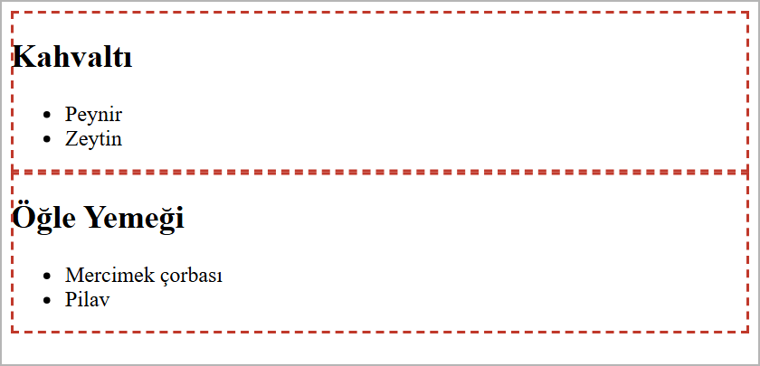

Listeler ve Tablolar
Bu sayfada
Liste, birbiriyle ilgili maddeleri alt alta sıralar: tarif adımları ya da bir menüdeki bağlantılar gibi. Tablo ise veriyi satır ve sütunlara yerleştirir; ders programı ya da fiyat listesi gibi karşılaştırılacak bilgiler için kullanılır. <div> ise sayfadaki içeriği kutulara ayırır; bundan sonraki bütün haftalarda sayfa düzenini bu kutularla kuracağız.
1Listeler
Listeler iki türlüdür ve her ikisinde de her madde <li> (list item) etiketiyle yazılır.

1.1. Sırasız Liste: <ul>
Maddelerin sırası önemli değilse sırasız liste kullanılır. Tarayıcı her maddenin başına madde işareti (•) koyar.
<h2>Alışveriş Listesi</h2>
<ul>
<li>Elma</li>
<li>Armut</li>
<li>Kiraz</li>
</ul>
1.2. Sıralı Liste: <ol>
Maddelerin sırası önemliyse (adımlar, sıralama) sıralı liste kullanılır. Tarayıcı her maddeyi numaralandırır.
<h2>Sabah Rutini</h2>
<ol>
<li>Uyan</li>
<li>Kahvaltı yap</li>
<li>Okula git</li>
</ol>
Numara yerine harf veya Roma rakamı istiyorsanız type özelliğini kullanabilirsiniz:
type değeri | Görünüm |
|---|---|
1 | 1, 2, 3 (varsayılan) |
A | A, B, C |
a | a, b, c |
I | I, II, III |
<ol type="A">
<li>Birinci</li>
<li>İkinci</li>
</ol>
1.3. İç İçe Liste
Bir maddenin altında alt maddeler olabilir. Bunun için <li> içine yeni bir liste yazılır:
<ul>
<li>Meyveler
<ul>
<li>Elma</li>
<li>Armut</li>
</ul>
</li>
<li>Sebzeler</li>
</ul>
2Tablolar
Tablolar, verileri satır ve sütunlar hâlinde düzenler. Bir tablo satırlardan (<tr>), her satır da hücrelerden oluşur:

| Etiket | Görevi |
|---|---|
<table> | Tablonun tamamını kapsar. |
<tr> | Bir satır oluşturur (table row). |
<th> | Başlık hücresi; varsayılan olarak kalın ve ortalı görünür. |
<td> | Veri hücresi (table data). |
Bu haftanın çıktısı bir haftalık ders programı tablosu. İlk satır günlerin başlıklarını (<th>), diğer satırlar saatlere göre dersleri (<td>) içerir.
<!DOCTYPE html>
<html lang="tr">
<head>
<meta charset="utf-8">
<title>Ders Programı</title>
</head>
<body>
<h1>Haftalık Ders Programı</h1>
<table border="1">
<tr>
<th>Saat</th>
<th>Pazartesi</th>
<th>Salı</th>
<th>Çarşamba</th>
</tr>
<tr>
<td>09:00</td>
<td>Matematik</td>
<td>Türkçe</td>
<td>Fizik</td>
</tr>
<tr>
<td>10:00</td>
<td>Web Tasarımı</td>
<td>İngilizce</td>
<td>Kimya</td>
</tr>
<tr>
<td>11:00</td>
<td>Beden</td>
<td>Tarih</td>
<td>Biyoloji</td>
</tr>
</table>
</body>
</html>
Kaydedip tarayıcıda açtığınızda şu sonucu görürsünüz:

border="1" özelliği hücrelerin kenarlıklarını gösterir; bu olmadan tablo çizgisiz görünür. border="1" HTML5'te eskimiş sayılır; tablonun görünümünü 6. haftada, CSS'e Giriş konusunda CSS ile vereceğiz. O zamana kadar kenarlığı görmek için geçici olarak kullanıyoruz.
3<div>: İçeriği Kutulara Ayırmak
3.1. <div> Nedir?
<div> (division, bölüm), birbiriyle ilgili içeriği bir kutuda toplayan etikettir. Bir başlığı, onun altındaki listeyi ve paragrafı aynı kutuya koyabilirsiniz. Kutunun kendisi ekranda görünmez; ama tarayıcı onu bir bütün olarak tanır.
<div> hakkında bilmeniz gereken iki temel özellik:
- Her
<div>yeni bir satırda başlar ve bulunduğu satırın tamamını kaplar. İki<div>art arda yazılırsa alt alta dizilir. - Kendi başına görünüm getirmez: rengi, kenarlığı, boşluğu yoktur. İçine yazılanlar
<div>yokmuş gibi görünür.
3.2. Kutularla Gruplama
Aşağıdaki kodda iki öğün iki ayrı kutuya ayrılmıştır. Her kutuda bir başlık ve bir liste vardır:
<div>
<h2>Kahvaltı</h2>
<ul>
<li>Peynir</li>
<li>Zeytin</li>
</ul>
</div>
<div>
<h2>Öğle Yemeği</h2>
<ul>
<li>Mercimek çorbası</li>
<li>Pilav</li>
</ul>
</div>
Bu kod tarayıcıda iki başlık ve iki liste olarak alt alta görünür; kutuların sınırları görünmez. Aşağıdaki görselde kutuları görebilmeniz için sınırlarını kesik çizgiyle gösterdik:

Kutuların satırın tamamını kapladığına ve alt alta dizildiğine dikkat edin. Bu kutulara 7. haftada, CSS Kutu Modeli konusunda kenarlık ve boşluk verecek; 10. haftada, Flexbox 1 konusunda da onları yan yana dizeceğiz.
3.3. İç İçe <div>
Bir kutunun içinde başka kutular olabilir. Gerçek sayfalar böyle kurulur: bütün sayfayı saran bir kutu, onun içinde üst bölüm, içerik ve alt bilgi kutuları.
<div>
<div>
<h1>Kahve Dünyası</h1>
</div>
<div>
<h2>Menümüz</h2>
<ul>
<li>Filtre kahve</li>
<li>Türk kahvesi</li>
</ul>
</div>
<div>
<p>Her gün 08.00 - 22.00 arası açığız.</p>
</div>
</div>
İç içe yazarken iki kurala uyun:
- Açılan her
<div>kapatılır. En son açılan<div>, en önce kapatılır. - Girintiyi düzgün tutun: içteki kutuyu dıştakinden dört boşluk içeri yazın. Böylece hangi
</div>'in hangi<div>'i kapattığı kolayca görülür.
3.4. class ile Kutulara Ad Vermek
Bir sayfada çok sayıda <div> olur. Hangisinin ne olduğunu anlamak için kutulara class özelliğiyle ad verilir:
<div class="urun">
<h3>Filtre Kahve</h3>
<p>60 TL</p>
</div>
<div class="urun">
<h3>Türk Kahvesi</h3>
<p>50 TL</p>
</div>
- Aynı
classadı birden fazla kutuya verilebilir; iki ürün kutusu daurunadını taşır. classadını alışkanlık olarak küçük harfle ve Türkçe harf kullanmadan yazın.classadında boşluk olmaz:class="urun kutusu"yazarsanız tarayıcı bunu iki ayrı ad (urunvekutusu) sayar. İki kelime gerekiyorsa alt çizgi kullanın:urun_kutusu.
Kutulara verdiğiniz adlar, CSS'te o kutuları seçmek için kullanılır. Bunu 6. haftada, CSS'e Giriş konusunda göreceğiz.
Eskiden sayfa düzeni tablolarla kurulurdu: menüyü sola, içeriği sağa almak için sayfanın tamamı büyük bir tablonun hücrelerine bölünürdü. Bugün sayfa <div> ve anlamlı etiketlerle (Tasarımdan Koda, 9. hafta) bölümlere ayrılır, CSS ile yerleştirilir. Tablo ise yalnızca gerçekten satır ve sütunlu veriler (ders programı, fiyat listesi) için kullanılır.
4Sıkça Yapılan 6 Hata
| Hata | Sonuç | Çözüm |
|---|---|---|
<li>'yi <ul>/<ol> dışında kullanmak | Madde işaretleri görünmez, maddeler düz yazı gibi alt alta durur | <li> her zaman <ul> veya <ol> içinde olmalı |
<tr> içine doğrudan metin yazmak | Metin tablonun dışına, üstüne taşınır | Metni <td> veya <th> içine yazın |
| Sayfa düzenini tabloyla kurmak | Kod uzar ve karmaşıklaşır | Düzen için <div> ve CSS kullanın; tabloyu yalnızca veri için kullanın |
<div>'in kendiliğinden kutu gibi görüneceğini sanmak | Ekranda hiçbir değişiklik olmaz | Kutunun görünümünü CSS ile verin |
<div>'i kapatmayı unutmak | Ekranda fark görünmez, ama sonraki bütün içerik o kutunun içine girer | Açılan her <div>'i </div> ile kapatın, girintiyi düzgün tutun |
class adına boşluk koymak (class="urun kutusu") | Tarayıcı bunu iki ayrı ad sayar | Boşluk yerine alt çizgi kullanın: urun_kutusu |
5Bu Haftanın Özeti
- Listeler
<li>maddelerinden oluşur:<ul>madde işaretli (sırasız),<ol>numaralı (sıralı) liste yapar.typeözelliğiyle numaralar harfe (type="A") veya Roma rakamına (type="I") dönüştürülebilir. - Bir
<li>içine yeni bir liste yazarak iç içe liste oluşturulur. - Tablo:
<table>içinde<tr>satırları, satırların içinde<th>(başlık) ve<td>(veri) hücreleri bulunur. Tablo yalnızca satır ve sütunlu veriler içindir. <div>içeriği bir kutuda toplar. Her<div>yeni satırda başlar, satırın tamamını kaplar ve kendi başına görünüm getirmez.<div>'ler iç içe yazılabilir; açılan her<div>kapatılır.- Kutulara
classile ad verilir; aynı ad birden fazla kutuda kullanılabilir, adda boşluk olmaz.
6Konu Sonu Testi
-
Numaralı (sıralı) bir liste oluşturmak için hangi etiket kullanılır?
- a)
<ul> - b)
<ol> - c)
<li> - d)
<list>
Cevabı göster
bSıralı (numaralı) liste<ol>ile yapılır;<ul>madde işareti koyar. - a)
-
Bir listedeki her madde hangi etiketle yazılır?
- a)
<li> - b)
<td> - c)
<tr> - d)
<ul>
Cevabı göster
aHer liste maddesi<li>ile yazılır. - a)
-
Bir tabloda satır hangi etiketle tanımlanır?
- a)
<td> - b)
<th> - c)
<tr> - d)
<table>
Cevabı göster
cBir satır<tr>(table row) ile tanımlanır. - a)
-
CSS yazılmamış bir sayfada
<div>içine alınan içerik nasıl görünür?- a) Kenarlıklı bir kutu içinde
- b) Gri bir zemin üzerinde
- c)
<div>yokmuş gibi, değişmeden - d) Hiç görünmez
Cevabı göster
c<div>kendi başına görünüm getirmez; görünümü CSS verir. -
<div class="urun kutusu">yazıldığında tarayıcı kutuya kaç ad verilmiş sayar?- a) Bir
- b) İki
- c) Hiç
- d) Üç
Cevabı göster
bclassadındaki boşluk iki ayrı ad demektir:urunvekutusu.
7Kendinizi Deneyin
Cevabınızı önce kendiniz yazın (defterinize ya da VS Code'da bir dosyaya), sonra cevapla karşılaştırın. Kod okuma ve hata bulma sorularında cevabınızı tarayıcıda deneyerek de kontrol edebilirsiniz.
1. (Kavram) <ul> ile <ol> arasındaki fark nedir? Hangisinin kullanılacağına nasıl karar verilir? Birer örnek durum yazın.
Cevabı göster
<ul> sırasız listedir, maddeler nokta ile gösterilir; sıranın önemli olmadığı durumlarda kullanılır (alışveriş listesi). <ol> sıralı listedir, maddeler numaralanır; sıranın önemli olduğu durumlarda kullanılır (yemek tarifinin adımları).
2. (Kavram) Tablo etiketlerinden <tr>, <th> ve <td> ne işe yarar?
Cevabı göster
<tr> tablonun bir satırıdır. <th> başlık hücresidir; tarayıcı içindeki yazıyı kalın ve ortalı gösterir. <td> normal veri hücresidir. <th> ve <td> her zaman bir <tr> içine yazılır.
3. (Kod okuma) Aşağıdaki kod tarayıcıda nasıl görünür? Madde işaretlerini ve girintiyi belirterek yazın.
<ul>
<li>Meyveler
<ul>
<li>Elma</li>
<li>Armut</li>
</ul>
</li>
<li>Sebzeler</li>
</ul>
Cevabı göster
• Meyveler
○ Elma
○ Armut
• Sebzeler
İçteki liste "Meyveler" maddesinin altında, içeriden başlar. Tarayıcı iç listenin madde işaretini içi boş daire olarak gösterir.
4. (Hata bulma) Aşağıdaki kodda iki hata var. Bulun ve düzeltin.
<ol>
<li>Unu ekleyin</li>
<li>Karıştırın</li>
</ul>
<table border="1">
<td>Ad</td>
<td>Yaş</td>
</table>
Cevabı göster
- Liste
<ol>ile açılmış,</ul>ile kapatılmış. Doğrusu:</ol> <td>hücreleri bir satırın (<tr>) içinde değil. Tarayıcı bunu çoğu zaman kendisi düzeltir, ama kod yanlıştır. Doğrusu:
<table border="1">
<tr>
<td>Ad</td>
<td>Yaş</td>
</tr>
</table>
5. (Kod okuma) Aşağıdaki kodda kaç kutu vardır? Hangi kutu hangisinin içindedir? </div>'lerin hangi <div>'leri kapattığını yazın.
<div class="sayfa">
<div class="ust">
<h1>Kitap Kulübü</h1>
</div>
<div class="icerik">
<p>Her ay bir kitap okuyoruz.</p>
</div>
</div>
Cevabı göster
Üç kutu vardır. ust ve icerik kutuları, sayfa kutusunun içindedir. Birinci </div> ust kutusunu, ikinci </div> icerik kutusunu, en sondaki </div> de sayfa kutusunu kapatır.
6. (Kod yazma) İki ürün kutusu yazın. Her kutunun class adı urun olsun; içinde ürünün adı (<h3>) ve fiyatı (<p>) bulunsun.
Cevabı göster
<div class="urun">
<h3>Defter</h3>
<p>40 TL</p>
</div>
<div class="urun">
<h3>Kalem</h3>
<p>15 TL</p>
</div>
7. (Kavram) Eskiden web sayfalarının düzeni (menü solda, içerik sağda gibi) tablolarla kurulurdu. Bugün düzen neyle kurulur? Tablo hangi durumlarda kullanılır?
Cevabı göster
Bugün sayfa <div> ve anlamlı etiketlerle bölümlere ayrılır, bölümler CSS ile yerleştirilir. Tablo yalnızca gerçekten satır ve sütunlu veriler için kullanılır: ders programı, fiyat listesi gibi.
8Uygulamalar
Görev: Bir sayfada iki kutu oluşturun: birinci kutuda üç ürünü ve fiyatlarını gösteren bir tablo, ikinci kutuda bir kek tarifinin adımlarını gösteren bir sıralı liste bulunsun. Kutulara class ile ad verin.
Çözüm:
<!DOCTYPE html>
<html lang="tr">
<head>
<meta charset="utf-8">
<title>Ürünler ve Tarif</title>
</head>
<body>
<div class="fiyatlar">
<h1>Fiyat Listesi</h1>
<table border="1">
<tr>
<th>Ürün</th>
<th>Fiyat</th>
</tr>
<tr>
<td>Ekmek</td>
<td>15 TL</td>
</tr>
<tr>
<td>Süt</td>
<td>30 TL</td>
</tr>
<tr>
<td>Yumurta</td>
<td>60 TL</td>
</tr>
</table>
</div>
<div class="tarif">
<h2>Kek Tarifi</h2>
<ol>
<li>Malzemeleri karıştırın.</li>
<li>Kalıba dökün.</li>
<li>Fırında 40 dakika pişirin.</li>
</ol>
</div>
</body>
</html>
Adımlar:
web_sitemklasöründefiyat_listesi.htmladında yeni bir dosya oluşturun.- Yukarıdaki kodu yazıp kaydedin (
Ctrl+S). - Dosyayı tarayıcıda açarak tablo ve listenin göründüğünü doğrulayın. Kutular görünmez; tablo ve liste alt alta durur.
9Sınıf Uygulaması
Senaryo: Bir konuyu (kendi seçtiğiniz bir işletme, hobi veya ders) listeler ve bir tablo kullanarak, kutulara ayrılmış bir bilgi sayfası olarak sunun.
Yapılacaklar:
web_sitemklasöründebilgi.htmladında yeni bir dosya oluşturun.- Bir
<ul>(sırasız liste) ile en az beş madde yazın (örneğin hizmetler veya ilgi alanları). - Bir
<ol>(sıralı liste) ile bir adım listesi yazın (örneğin bir tarif veya süreç). - Bir
<table border="1">oluşturun: ilk satır<th>başlıkları, sonraki satırlar<td>verileri (örneğin haftalık program veya fiyat listesi). - Her bölümü (iki liste ve tablo) kendi başlığıyla birlikte ayrı bir
<div>içine alın ve her kutuya anlamlı birclassadı verin (örneğinhizmetler,adimlar,program).
Beklenen sonuç: Sayfada madde işaretli bir liste, numaralı bir liste ve kenarlıklı, başlıklı bir tablo görünür. Kodda her bölüm kendi <div> kutusunun içindedir.
İpuçları: <li> her zaman <ul>/<ol> içinde olmalı. Açılan her <div>'i kapatın ve girintiyi düzgün tutun; class adlarında boşluk ve Türkçe harf kullanmayın.
10Notlar ve İpuçları
<th>yalnızca kalın görünmek için değildir. Ekran okuyucular başlık hücresi sayesinde her verinin hangi sütuna ait olduğunu okuyabilir.- İç içe listede alt liste,
<li>'nin içine,</li>'den önce yazılır. - VS Code'da bir
<div>etiketinin üzerine tıkladığınızda, onu kapatan</div>da vurgulanır. Uzun kodlarda hangi etiketin hangisini kapattığını böyle kontrol edebilirsiniz. <div>satırı böler. Bir satırın içindeki birkaç kelimeyi işaretlemek için kullanılan<span>etiketini 6. haftada, CSS'e Giriş konusunda göreceğiz.
11Çalışma Soruları
Soruları web_sitem klasöründe açacağınız yeni bir .html dosyasında deneyin.
<ul>ile en sevdiğiniz beş filmi listeleyin.<ol>ile sabah rutininizi sırayla yazın.- Kendi haftalık ders programınızı bir tablo hâline getirin.
- Bir
<ol>listesindetype="A"kullanıp numaraların harfe dönüştüğünü gözlemleyin. - Sayfanızı üç
<div>kutusuna ayırın (üst bölüm, içerik, alt bilgi) ve her birineclassile ad verin. - İçerik kutusunun içine iki ayrı kutu daha yazın; girintiyi düzenleyip her
</div>'in hangi<div>'i kapattığını kontrol edin.
Kaynakça
- MDN: Lists (İngilizce)
- MDN: HTML table basics (İngilizce)
- MDN:
<div>(İngilizce)
Bu haftanın Sınıf Uygulaması sayfanın sonundadır. Önce konu anlatımını okuyun, sonra uygulamayı kendi bilgisayarınızda yapın.